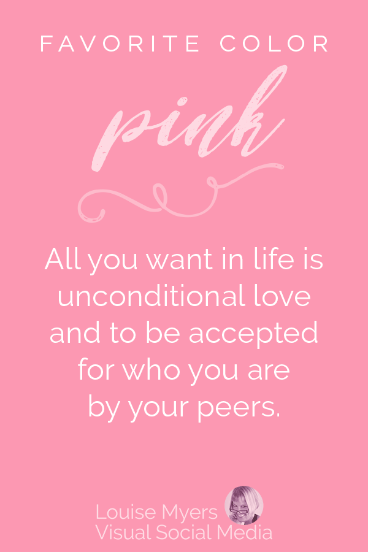

Pink

All you want in life is unconditional love and to be accepted for who you are by your peers.
You have an easygoing, approachable energy.
You come from a place of assuming the good outweighs the bad in everyone and every situation.
Witty and smart, you sparkle socially particularly in small groups.
Your caring and encouraging demeanor nurtures your longtime friendships.
You genuinely revel in the success and happiness of others, especially your friends and family.
Compassionate, perhaps to a fault, you are the one those closest to you depend on when they need a shoulder to
cry on or a boost of confidence.
The saying about seeing life through rose-colored glasses sums up your pink perspective.
Peace, harmony, and calmness are important to your daily routine.
You appreciate letting loose on occasion and enjoy embracing all the fun life has to offer.
Favorite color PINK? All you want in life is unconditional love and to be accepted for who you are by your
peers.